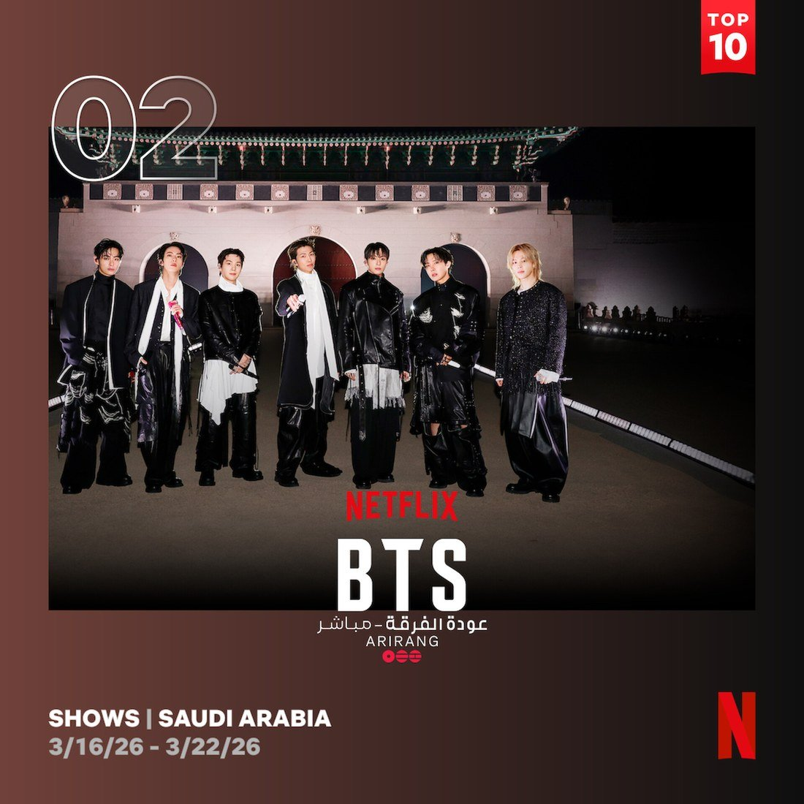
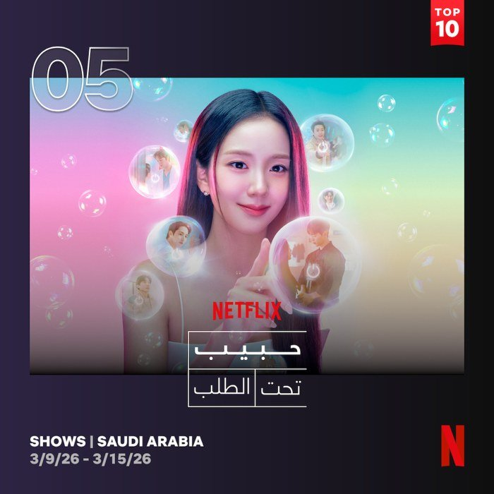
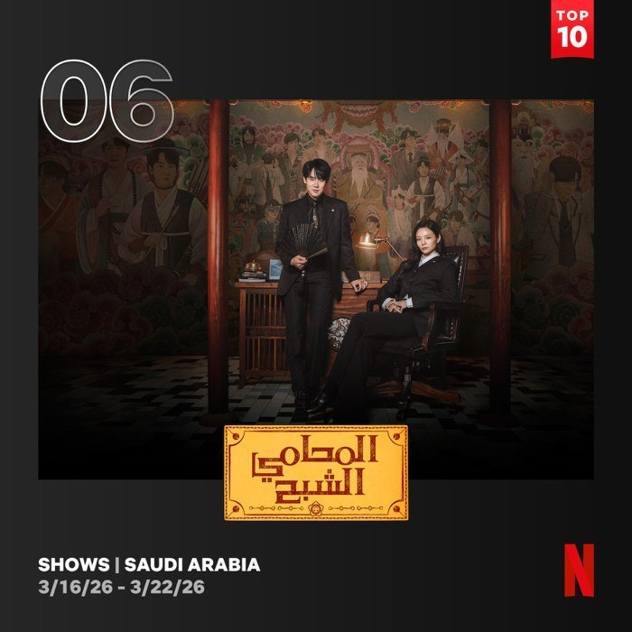
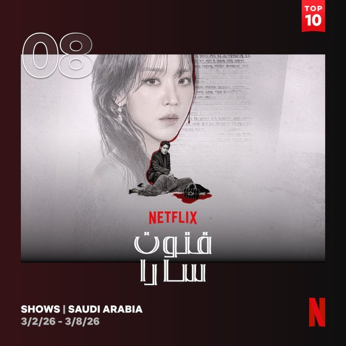
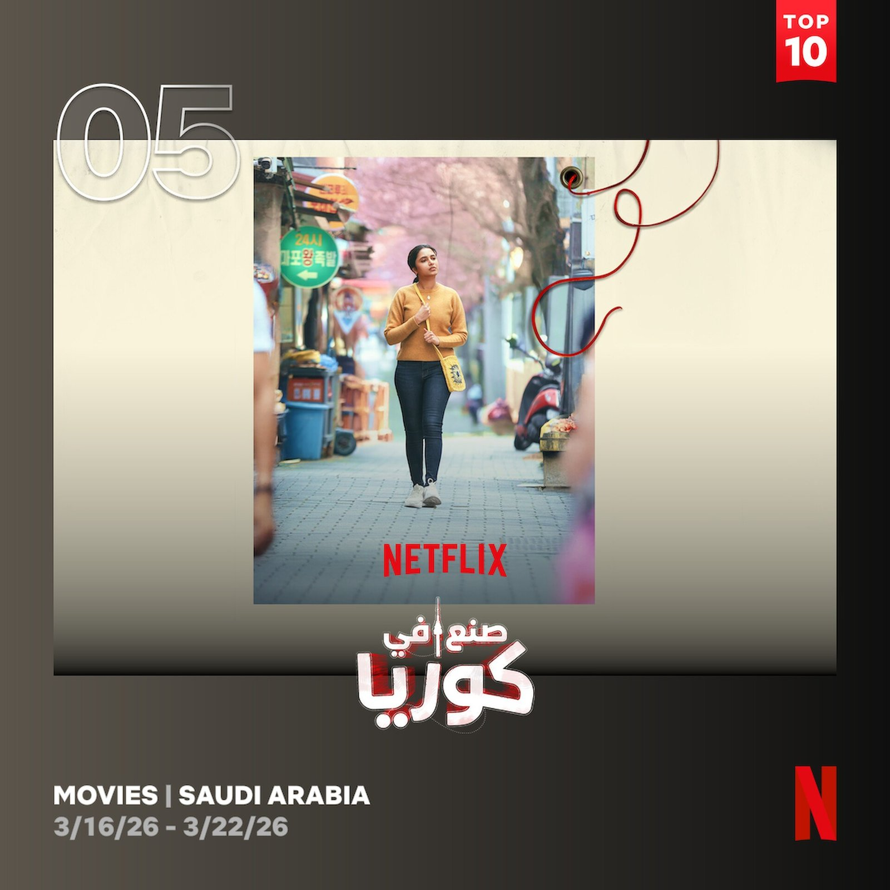
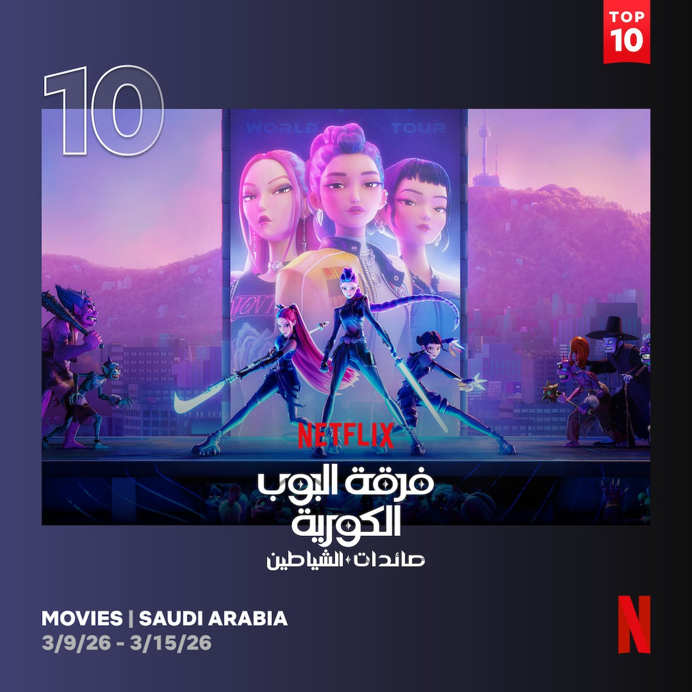

방탄소년단(BTS) 라이브 흥행과 한국 콘텐츠 인기 이어져
3월 21일에는 BTS의 광화문 광장 컴백 콘서트가 넷플릭스를 통해 생중계되며 현지에서도 큰 관심을 모았다. 해당 공연은 셋째 주 2위에 오르며 사우디 시청자들의 높은 관심을 확인시켰다.

▲ 3월 셋째 주 2위 기록한 방탄소년단(BTS) 광화문 광장 라이브 공연 — 출처: 넷플릭스(Netflix) 투둠 웹사이트
3월 둘째 주 사우디 넷플릭스 쇼 부문에서는 3월 6일 공개된 10부작 로맨스 드라마 <월간남친>(연출 김정식, 극본 남궁도영)이 5위를 기록했다. 지수가 주연을 맡은 이 작품은 현실에 지친 웹툰 PD '미래'가 가상 연애 시뮬레이션을 통해 관계를 '구독'하는 설정을 바탕으로, 연애를 간접적으로 경험하는 과정을 그린 로맨틱 코미디다. 같은 기간 드라마 <신이랑 법률사무소>(연출 신중훈, 극본 김가영·강철규)는 6위를 기록했다. 망자의 '한'을 풀어주는 '신들린 변호사' 신이랑과 승소를 위해 수단과 방법을 가리지 않는 '엘리트 변호사' 한나현이 사건을 해결해 나가는 이야기를 담았다.


▲ 3월 넷플릭스 통계에 10위권 안에 진입한 한국 드라마들 — (좌) 5위 〈월간남친〉, (우) 6위 〈신이랑 법률사무소〉 — 출처: 넷플릭스(Netflix) 투둠 웹사이트
한편 2월 셋째 주 쇼 부문 1위를 기록했던 <레이디 두아>는 2월 말 4위, 3월 첫째 주 8위로 내려가며 순위가 점차 하락하는 흐름을 보였다. 드라마 부문은 로맨스를 비롯해 스릴러, 법정드라마 등 다양한 장르의 콘텐츠가 사우디 시청자들에게 고르게 소비되고 있는 것으로 나타났다.

▲ 3월 첫째 주 8위 기록한 〈레이디 두아〉 — 출처: 넷플릭스(Netflix) 투둠 웹사이트
한국 배경 해외 영화 등장…문화 융합 콘텐츠 주목
3월 12일 공개된 인도 영화 〈다시, 서울에서〉는 공개 직후 6위에 진입한 데 이어 셋째 주 5위를 기록하며 상승 흐름을 이어가고 있다. 연출과 각본을 맡은 라 카르틱(Ra Karthik) 감독은 "지난 10여 년간 한국 문화가 인도 사회에 큰 영향을 미쳤다"며, 작품 준비 과정에서 한국과 타밀 문화 사이의 공통점과 연결성을 발견했다고 밝혔다.

▲ 3월 셋째 주 5위 기록한 인도 영화 〈다시, 서울에서〉 — 출처: 넷플릭스(Netflix) 투둠 웹사이트
주연은 인도계 배우 프리얀카 모한(Priyanka Mohan)과 한국 배우 백시훈이 맡았다. 영화는 주인공 '셴바'가 연인과 함께 떠난 한국 여행에서 예상치 못한 이별을 겪고, 서울에 홀로 남겨지며 시작된다. 낯선 환경 속에서 외로움과 문화적 차이를 마주하는 동시에 새로운 관계를 형성하고, 스스로의 삶을 다시 세워가는 과정을 그린다. 특히 한국을 배경으로 한 해외 작품이 사우디 시장에서 상위권에 오른 점은 주목할 만하다. 이는 한국 문화에 대한 관심이 이어지는 가운데, 서로 다른 문화가 결합한 콘텐츠가 글로벌 시장에서 새로운 가능성을 보여주고 있음을 시사한다.
한편, 영화 〈케이팝 데몬 헌터스(KPop Demon Hunters)〉는 공개 이후 약 9개월이 지났음에도 불구하고 3월 둘째 주 10위를 기록하며 꾸준한 시청을 이어가고 있다.

▲ 3월 둘째 주 영화 부문 10위 기록한 〈케이팝 데몬 헌터스(KPop Demon Hunters)〉 — 출처: 넷플릭스(Netflix) 투둠 웹사이트
사진출처 및 참고자료
– 넷플릭스(Netflix) 투둠 웹사이트, netflix.com/tudum
– ≪포브스(Forbes)≫ (2025. 10. 13). Netflix India's Tamil Film 'Made In Korea' To Star Squid Game Actress, forbes.com